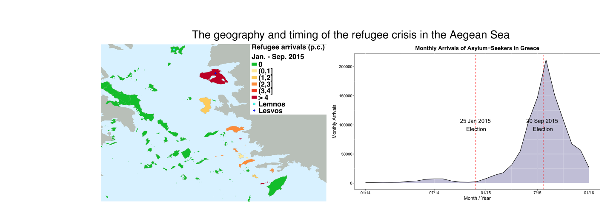
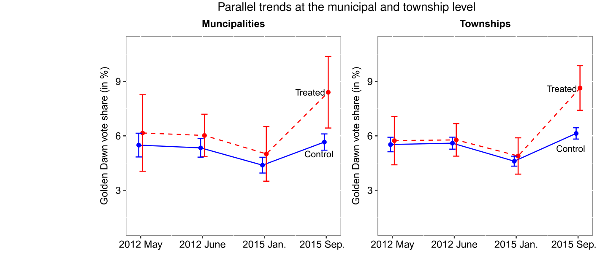
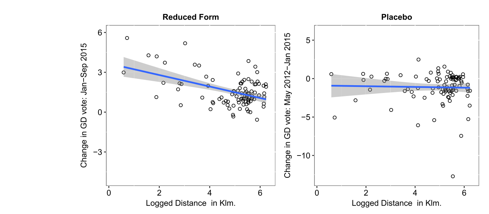
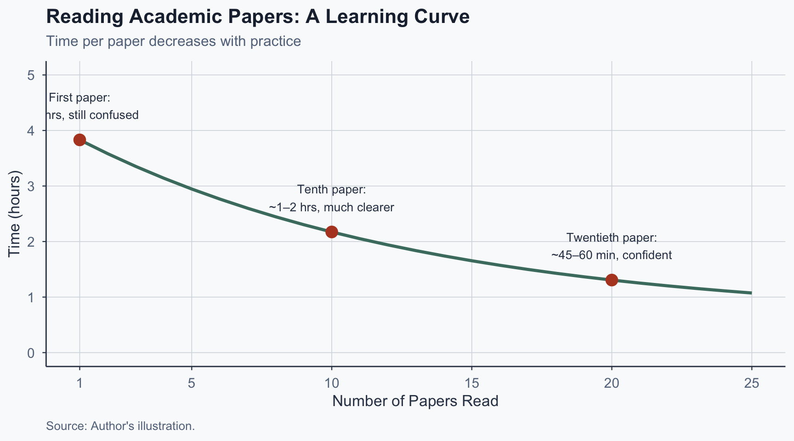

![]()
%%{init:{"flowchart":{"useMaxWidth":true},"themeVariables":{"fontSize":"22px"},"flowchart":{"nodeSpacing":50,"rankSpacing":60},"width":1100,"height":500}}%%
flowchart LR
A["<b>Pass 1</b><br/>15–20 min<br/>Main Argument"] --> B["<b>Pass 2</b><br/>15–20 min<br/>Evidence"]
B --> C["<b>Pass 3</b><br/>Optional<br/>Deep Methods"]
style A fill:#4a7c6f,color:#fff,stroke:#334155
style B fill:#b7943a,color:#fff,stroke:#334155
style C fill:#b44527,color:#fff,stroke:#334155
How to Read an Academic Research Paper
A Practical, Multi-Pass Strategy
Today’s Goals
- Learn a multi-pass strategy for reading papers
- Feel less intimidated by academic writing
- Extract key ideas efficiently
By the end: You’ll have a repeatable reading workflow.
Why Papers Feel Intimidating
It’s Not Just You
Designed for experts:
- Dense, specialized jargon
- Complex statistical tables
- Authors write for peer reviewers, not students
Good news:
- Confusion is normal
- Even professors re-read papers
- Reading skill is rarely taught-but learnable
- Your job: extract core ideas
Our Running Example
“Waking Up the Golden Dawn”
Full title: “Waking Up the Golden Dawn: Does Exposure to the Refugee Crisis Increase Support for Extreme-Right Parties?”
Published: Political Analysis (2019)
Authors: Dinas, Matakos, Xefteris & Hangartner
What’s This Paper About?
- Question: Did refugee arrivals boost far-right voting?
- Setting: Greek islands, 2015 refugee crisis
- Design: Islands received different refugee flows
- Finding: ~2 percentage-point rise in Golden Dawn vote

The Three-Pass Strategy
Don’t Read Start to Finish!
Bad strategy: Open page 1, read every word to the end.
Good strategy: Make multiple passes with different goals.
Based on: Keshav’s (2007) “three-pass approach.”
The Three Passes at a Glance
Total: 30–40 minutes for core understanding.
Pass 1: The Big Picture
What to Read in Pass 1
%%{init:{"flowchart":{"useMaxWidth":true},"themeVariables":{"fontSize":"22px"},"flowchart":{"nodeSpacing":50,"rankSpacing":60},"width":1100,"height":500}}%%
flowchart LR
T["<b>Title &<br/>Abstract</b><br/>~2 min"] --> I["<b>Introduction</b><br/>~10 min"]
I --> C["<b>Conclusion</b><br/>~5 min"]
C --> S["<b>Skip</b><br/>everything<br/>else for now"]
style T fill:#4a7c6f,color:#fff,stroke:#334155
style I fill:#4a7c6f,color:#fff,stroke:#334155
style C fill:#4a7c6f,color:#fff,stroke:#334155
style S fill:#64748b,color:#fff,stroke:#334155
The Title Tells You a Lot
“Waking Up the Golden Dawn: Does Exposure to the Refugee Crisis Increase Support for Extreme-Right Parties?”
- Topic: Refugee crisis and far-right voting
- Question: Does exposure increase support?
- Setting: Greece, Golden Dawn party
Reading the Abstract
- The question: What are they asking?
- The answer: What did they find?
- The method: How did they study it?
- So what: Why does it matter?
Golden Dawn decoded: Refugee exposure → ~2 pp increase (≈44% rise at the mean) via natural experiment across Greek islands. Mere exposure can fuel anti-immigrant politics.
What to Look for in the Intro & Conclusion
Introduction:
- Why this matters: Major crisis, European far-right surge
- Previous research: Mixed contact-theory evidence
- What’s new: Sudden 2015 arrivals as natural experiment
Conclusion:
- Key result: ~2 pp increase in Golden Dawn vote share
- Mechanism: Strongest where refugees were visible
- Limitation: Can’t determine if effect is permanent
Honesty about limitations = good research.
Pause and Reflect
After Pass 1, write down three things:
- The main question in your own words
- The main answer in your own words
- One thing you’re confused about
This becomes your foundation for Pass 2.
Pass 2: The Evidence
What to Read in Pass 2
- All figures and tables (~10 min)
- Research design section (~10 min)
Goal: Understand HOW they answered the question.
How to Read Figures
You don’t need to understand the statistics!
- What is being compared?
- What pattern do they show?
- Does this support the main argument?
Figures tell stories-look for visual patterns first.
Golden Dawn: Key Visual Pattern

Parallel trends at the municipal and township level. Treated islands diverge sharply after the 2015 refugee crisis. Source: Dinas et al. (2019), Figure 2.
Reading Tables Without Panic
- Rows: Different groups or time periods
- Columns: Different model specifications
- Numbers: Estimated effects
- Stars (*): Statistically significant results
Focus on: direction (positive/negative) and consistency.
Golden Dawn Results: What to Notice
- Positive numbers throughout → exposure ↑ votes
- Larger effects where refugees were visible
- Consistent across specifications
Translation: The finding is robust-holds up multiple ways.
Understanding the Research Design
Core comparison:
- Islands with many refugees vs. few/none
- Were islands similar before refugees arrived?
- Can we rule out alternative explanations?
Understanding Causality
What Does “Causal” Mean?
Causal claim: X causes Y (not just correlation).
Challenge: How do we know it’s not something else?
The Natural Experiment Logic
%%{init:{"flowchart":{"useMaxWidth":true},"themeVariables":{"fontSize":"20px"},"flowchart":{"nodeSpacing":40,"rankSpacing":50},"width":1100,"height":550}}%%
flowchart LR
A["<b>Treatment</b><br/>Islands receiving<br/>many refugees"] --> C["<b>Compare</b><br/>Did Golden Dawn<br/>vote share rise<br/>MORE here?"]
B["<b>Control</b><br/>Islands receiving<br/>few/no refugees"] --> C
C --> D["<b>Assumption</b><br/>Islands were<br/>similar before<br/>2015"]
style A fill:#b44527,color:#fff,stroke:#334155
style B fill:#4a7c6f,color:#fff,stroke:#334155
style C fill:#b7943a,color:#fff,stroke:#334155
style D fill:#64748b,color:#fff,stroke:#334155
Visualizing Treatment vs. Control

Proximity to Turkey predicts change in Golden Dawn vote share (left). No such relationship before the crisis - the placebo test (right). Source: Dinas et al. (2019), Figure 4.
Exercise: Spot the Comparison
Prompt: In the Golden Dawn study, the treatment is “islands receiving many refugees” and the control is “islands receiving few.” What could go wrong with this comparison? Brainstorm two possible threats to validity with a partner.
Estimated time: 5 minutes
Pass 3: Methods (Optional)
Pass 3: When and How
Do it if:
- Writing about the paper in detail
- Preparing for in-depth discussion
- Planning similar research
What to expect:
- The methods/analysis section in full detail
- The hardest part of the paper
- Can take 1–4 hours depending on complexity
Skip if you just need the main ideas. Strategy: Go slow, look up terms, ask for help.
Reading Critically
Critical Reading
Don’t just accept everything!
- Is the comparison fair?
- Are there alternative explanations?
- Does the evidence support the conclusion?
- What are the limitations?
Good papers acknowledge their limits. No single study proves anything definitively-science advances through accumulation.
Critical Questions for Golden Dawn
- Could tourism have declined on exposed islands?
- Might media coverage have differed across islands?
- Would the effect persist over time?
- Could economic factors explain the results?
The authors address some-but not all.
Using AI Responsibly
AI Can Help-But Has Limits
AI CAN:
- Explain jargon in plain language
- Clarify confusing sentences
- Define statistical concepts
AI CANNOT:
- Replace actually reading the paper
- Evaluate evidence critically for you
- Guarantee factual accuracy-AI can invent citations that don’t exist and misrepresent findings
Always verify before trusting.
AI Prompts: Good vs. Bad
Good prompts:
- “What does ‘difference-in-differences’ mean simply?”
- “Rephrase this sentence: [paste sentence]”
- “Did I understand correctly? [your explanation]”
Bad prompts:
- “Summarize this entire 30-page paper” → skips your learning
- “Give me references on this topic” → AI invents citations
- “Write a critique of this paper’s methods” → plagiarism risk
Practical Tips
Create a Reading Template
For each paper, write one sentence for each:
- Research question
- Main finding
- Method used
- One strength
- One limitation
- Why it matters
What to Focus On
You can skip:
- Every equation or statistical test
- Every citation in the literature review
- Every technical detail in the appendix
You must understand:
- Main question and answer
- Basic logic of the comparison
- Key evidence (direction and consistency)
- Major limitations
Reading Gets Easier Over Time

Author’s illustration of a typical learning curve.
Key Takeaways
Remember
- Confusion is normal-even for experts
- Don’t read linearly-use the multi-pass strategy
- The question is your compass-find it first
- Figures tell stories-you don’t need advanced stats
- Read critically-ask questions, identify limits
- Use AI wisely-as assistant, not replacement
Reading is a skill. You improve with practice.
References
Works Cited
Dinas, E., Matakos, K., Xefteris, D., & Hangartner, D. (2019). Waking up the Golden Dawn: Does exposure to the refugee crisis increase support for extreme-right parties? Political Analysis, 27(2), 244–254. https://doi.org/10.1017/pan.2018.48
Keshav, S. (2007). How to read a paper. ACM SIGCOMM Computer Communication Review, 37(3), 83–84. https://doi.org/10.1145/1273445.1273458
Popescu (JCU): How to Read an Academic Research Paper